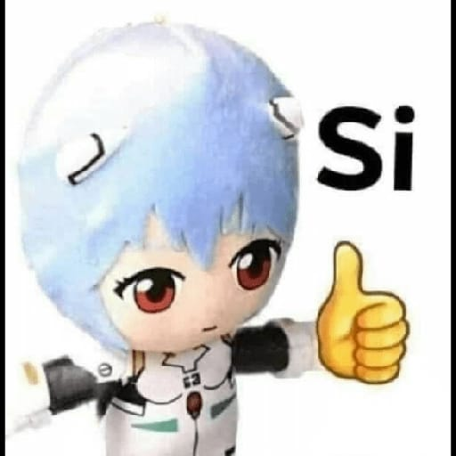
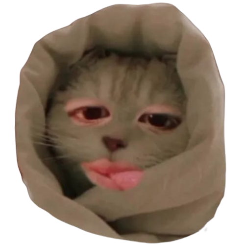
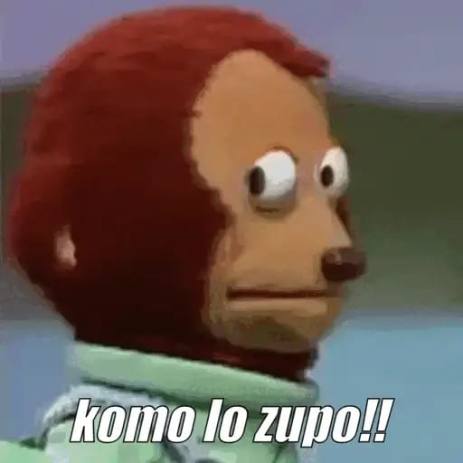

Rubís: Son todas sjjsjsj
Rubís: Y las que escogiste fue Lizbeth y Regina
David: Jajajaja
David: Te voy a dar un bonk jajaja
Rubís: Por qué jajaja
David: Si ya viste las elecciones y dijiste todas y falta una jajaja obvio es ahí jajajaja
Rubís: Bueno solo faltaba yo no?
David: 
Rubís: Aaaa jsjsjs
Rubis: 
Rubís: Entonces que quiere decir jajaja
David: Jajaja pues que quiere decir jajaja
David: Ya sabes las posibilidades no?
Rubís: JSJSJSJ si
Rubís: Pero por qué JSJSJSJ?
David: De cada quien? Jajaja
Rubís: De mi sjjsjsj
David: JAJAJAJAJA porque?
David: Ya es tarde ve a dormir jaja
David: Andale
Rubís: Soy una de las tres o me equivoco JAJAJAJ
Rubís: Bueno ya no entendí
Rubís: Ay si mañana tengo que ir a al escuela jajaja
David: Jajaja si
David: En breve
David: Lizbeth, Regina y tú kajsjsjs
David: Achi es jajaja
David: Pero capaz no quieres dormir -.-
Rubís: Y por qué jsjs
Rubís: Jajajaja y si
David: Pero solo quieres saber porque tú no? Jajaja
David: Jajaja a mimir Rubis andale
Rubís: Sip sjjsjs
Rubís: No ksjsj hoy no voy a dormir
David: Jajaja Rubis ve a dormir andale
Rubís: En un rato más
Rubís: Me vas a decir jajaja
David: Jajaja ya veo porque no quieres dormir jaja
Rubís: También no tengo sueño jajaja
David: Ajaaa
Rubís: Ya no me cambies de temas JAJAJAJ
David: Xd
David: Se nota que quieres saber jajajaja
Rubís: Mira si quiero saber y no se si se vea extraño
David: No no se ve extraño jaja que yo sepa no
Rubís: Pero tus razones JAJAJAJ me da curiosidad
David: Jajajaja
David: Haber
Rubís: Y enserio soy muy curiosa
Rubís: No me gusta quedarme con la duda
David: Yo a ti te identifique luego luego en el mes de octubre así jaja fuiste la primera que me memorize por así decirlo
Rubís:
David: JAJAJAJA
Rubís: Oki y por qué jsjsj
Rubís: 
David: Y razones:.
1. Eres dedicada a la escuela
2. No quieres hacer como experimentar probar algo malo
3. Eres libre pensamiento o puedes hablarlo sin incomodidad
4. Eres directa pero te interesa no lastimar a las personas
5. Sales de la zona de confort
6. No desistes y eso te lo dije en la mañana jajaja
7. Eres muy pero muy activa en todo y también eres líder
8. 👉🏻👈🏻 Jajaja me da pena decirlo jajaja
9. En relaciones ni se cómo eres jajaja pero se nota que cuando quieres a alguien das todo por el
10. Tú Forma de pensar 👉🏻👈🏻
11. ....
12 ....
13 ....
14 ....
15 ....
David: Jajajaja
David: Ya
David: No me pegues jajaja o me veas raro jaja
Rubís: Y por qué dejaste espacios jiji
Rubís: Nonono nada de eso
Rubís: Mañana en la mañana me recuerdas que les tengo que decir a los chicos que se esperen jajajaja
Rubís: Esque se me olvida
Rubís:
David: Jajajaja porque me da pena decirlo jajajaja
David: A Weno :3
Rubís: Ni modo me dices AJJAJAJAJA
David: Sip es más cuando te duermas ya sabes que me duermo tarde xd ahí te dejo el mensaje
Rubís: Sip jijiji
David: jajajajajajajajaja penita 👉🏻👈🏻
Rubís: Memoria de Dori
Rubís: Dices tú ya no debe de aver penita AJJAJAJAJA
Rubís: Conste que tú me dijiste eso
David: Es que eso no funciona en mi jajaja
David: No viene de fábrica xd
David: Bueno la 8. Eres linda no lo niego 👉🏻👈🏻 (esos emojis ahora son de pena jajaja)
Rubís: Tu si me hisiste para que no me diera penita AJJAJA
Rubís: Te faltan jsjsj 5 creo jajaja
Rubís:
Rubís: Jjaajjaja
David: JAJAJAJAJA pero eran otros temas
David: Jajaja rayos
David: A a a 11. Tendrás 14 añitos (ya estás cerca de tu cumple ya tienes 14 jajaja) y para esa edad tu forma como de razonar es muy increíble hasta pareces de mi edad
Rubís: JSJSJSJ
Rubís: Enserio aveces no me gusta mi forma sabes
David: O que es enserio pues
David: A mí me agrada
Rubís: Esque aún no conoces mi otro lado
Rubís: Y ese lado arruina todo
David: Tú otro lado?
Rubís: Osea si soy muy sociable pero cuando no estoy de humor no soy muy tolerante
Rubís: Y si me dices algo en ese momento osea tipo de mal humor en lugar de reaccionar así tranquila puedo ser muy grosera con tan solo palabras
David: Ay Rubis, todos tenemos un lado "oscuro" todos y eso nos hacer ser humanos, si no tuviéramos ese lado, seríamos máquinas y ya, eso es ser humano y no tiene nada de malo
Rubís: Pero como te explico que ese lado está muy mal visto
David: Quieres saber algo, mi mejor amiga al inicio era de que no quería hablar con nadie y me decía "lárgate de mi lugar" y yo estuve ahí y ella lo valora
David: Para mí no, yo también luego cuando me enojo es enojo que insulto (sin groserías) pero hiero
David: Yo créeme que no te voy a juzgar nunca por eso
Rubís: De verdad quisiera verlo asi
Rubís: Pero me dicen que si sigo así me va a traer problemas esa forma de ser
David: Nop, es más si tú dices que no te gusta, déjame o mejor dicho dame esa oportunidad de ayudarte (no me gusta decirlo así) pero se puede hacer algo para que no suceda
David: Pero aún así yo te estimo y quiero y respeto
David: Seas como seas
Rubís: Y aveces trato de estar tranquila y calmarme por qué cuando me arto hago gestos o digo palabras que después se que sonaron tontas
Rubís: Tq✨
Rubís: De hecho eh querido hablar con mis papás sobre eso para sobrellevar mis emociones
David: Yo te puedo decir así, estás en cambio, estás buscando una personalidad y es algo normal, con el tiempo va desapareciendo y si como todos, tenemos momentos malos pero eso nos hace ver todo, no te sientas mal por eso
David: Tal vez no soy tus papás, ni tu novio, ni tú mejor amigo, pero aquí estoy
David: Y de eso habla mi tesis de lo emocional
David: No por algo me quedé en su salon
Rubís: Tus consejos ayudan se mucho
Rubís: De**
David: Ánimos mi rubiss no te sientas mal por eso, demuestra a ti mismo, lo que eres, una persona muy linda
David: Internamente y externamente
David: E internamente no hablo a órganos jeje
Rubís: Tu igual lo eres y nunca cambies pls
Rubís: ✨
Rubís: Siempre ten esa forma optimista de ver las situaciones
David: Y sobretodo, podemos cometer errores claro, pero nos hacen cambiar e inclusive ser mejores
David: Naaa yo me suicidó xd no es cierto
Rubís: JAJAJAJ nada de eso ehh
David: A no seeee juju
Rubís: Así es
Rubís: No eh JSJSJSJ
David: Quién sabe jajaja
David: 12. Comprendes las situaciones de los demás y los ayudas con tus posibilidades
David: 13. Sales siempre risueña en las fotos jsjsjs
Rubís: No mejor vide la vida loca JAJAJA
David: 14. Haces que tu salón y así de verdad sea muy organizado y la líder de todos
David: Jajaja ay Rubis me he ido a lugares a las 2 de la mañana xd
Rubís: Me gusta ver una sonrisa en las personas
Rubís: JSJSJJS no es cierto
David: Y eso me gusta
Rubís: Y cres que soy buena líder
David: Ay como nop jajaja eso ni me lo digas porque es cierto
David: Sip, por algo la maestra de español te elige siempre
Rubís: Mejor así y no otras cosas pero siempre con cuidado jsjsj
David: Y más maestros
David: Ese día medio me arrepentí xd
Rubís: Aunque también se que no pueden estar siempre felices pero no está demás una sonrisa
Rubís: Al igual estaré para apoyarlos
David: Tú les das ese toque especial
David: Por algo te llamas rubí jiji
David: 14. 👉🏻👈🏻
Rubís: Porque cres que le pongo stickers a mi cara jajaj
Rubís: Bueno esque pienso que soy de ayuda
Rubís: Por qué jsjs
David: 15. Me has dado un cariño que nunca pensé que alguien me daría, bueno si me la han dado pero solo una semana y ya
David: Porque te da penita jaja
David: Eres una lider
David: Porque JAJAJAJAJA me JAJAJAJAJAJA
Rubís: JSJSJSJ buena elección de mis papás jsj
David: Solo imagina, tenía 19 años y 43 xd
Rubís: Enserio ✨aww
David: Chi jijiji
Rubís: Por qué si te adentras con una persona no sabes lo que puedes descubrir y yo lo hice contigo quise saber más de ti por qué eres alguien de admirar
Rubís: Bueno si también jsjsj
David: No sabías eso? Jsjsjs
Rubís: Tu también eres un buen líder
Rubís: Jsjsj
David: Yo tuve errores y pues los he olvidado para ser mejor persona y ayudar a los demás
David: Ahí está la respuesta jaja
Rubís: Jajajja sugar
Rubís: Jiji 🤭
David: Pero se me da mal el controlar jajaja
Rubís: No jiji
David: Nooo jajaja cállate jajaja me largué a la 1 de la mañana, estuve esperando media hora, entre (ya sabes a qué) y ah no que feo jajaja
Rubís: Cómo dijiste tu de los errores se aprende y si tú quisiste mejorar lo lograste porque yo si te admiro
Rubís: Jsjsjsj 🤭
David: Aparte siempre quize conocer a una chica que se llamar rubí jaja
David: Así es eso
Rubís: Esque eres relajado y esta kul eso sjjsj
David: Ayy Jsjsjs ya me dio pena alsbahaisnd
David: Soy marihuano xd
Rubís: Si tuviste entonces algo con ella ajjaja
Rubís: Y yo fui la primera JSJSJSJ
Rubís: Por qué pena jsjs
Rubís: Andale JAJAJAJAJAJ
Rubís: Ibas asi a la escuela vdd JAJAJAJ por eso siempre estabas así tranquilo
David: Pues pague jajaja pero me arrepiento xd
David: Chi :3
David: Jajaja no lo sé jaja
David: No que jajaja nonono
Rubís: Si eres un loquillo
Rubís: Jsjsjs 🤭
Rubís: Ay jsjs
Rubís: 🧐 JAJAJAJAJAJA
David: Jaja de eso sí me arrepiento xd
David: Así es Rubis jsjs
David: Bueno si no se jajaja
David: De verdad de verdad
David: Oye mira arriba
Rubís: Jjsjjs
Rubís: Seguro shhs
Rubís: Que pasa jajsj
David: Ya miraste arriba?
David: Creo jsjsjs no lo se
David: Pero no vallas a mirar al techo xd
Rubís: La hora jajaja
Rubís: Si fuí JAJA
David: Exacto la hora jajaja
David: Para que miras al techo
David: Ya viste la hora Rubis
Rubís: No lo sé jajajaj
David: Debes dormir 😴😴😴
Rubís: No es tan tarde a la 1:30 me duermo
Rubís: Nop
David: Ya mañana te digo la 14 razón jaja y seguimos de ese tema si te da curiosidad jajaja
David: No inventes jajaja
David: Cómo de que no
Rubís: Si no tengo sueño
David: Ash jajaja
Rubís: Y no se por que
Rubís: Jajaja
David: Se me hace que la que se marihuano fuiste tu
Rubís: Jiji no lo sé yo quiero saberlo hoy
David: Jajaja
Rubís: 
David: Jajaja la 14 razón, tu estatura jijiji
David: Cómo no saberlo, dije mira arriba y miraste el techo xd
Rubís: Queeee mira no te burles
Rubís: Ay JAJAJJAJAJJA
David: De queee jajaja de queee
Rubís: De mi estatura
David: No me burló jajaja, tu estatura es cute jsjsjs
David: No te digo que me da pena jajaja
David: Ya vez ya vez
Rubís: Entonces dime andaaa
Rubís: Aaaa bueno jaja
Rubís: Nadamás poquito
David: Ya lo dije jajaja en otras palabras jaja
David: Y no invitas 🙃
Rubís: Dime claro ves que no entiendo y tu JAJAJAJ
Rubís: Para la otra va
David: Pero te dije de tu estatura
David: Jajajaja
David: Que es tierna tu estatura, a mí me gusta jajaja
David: Jaja ya estuvo
David: Que no te acuerdas xd
Rubís: Jiji es por qué estoy enana vdd😔
Rubís: JAJAJAJ
David: Lo, realmente es tierna tu estatura jiji
David: ño*
David: Capaz capaz jaja
Rubís: Ya fuera de broma si estoy chiquita jsjsjs
David: Yyyyyyyy
David: Yyyyyyy
David: No me entendiste jsjsjsjs
David: O lo repito de new
Rubís: Sisis pero osea mi estatura es chiquita para mí edad
Rubís: Esque osea yo según era alta ajjaja
David: A mí me gusta eso jsjsjs
David: Supongo que a tu novio igual jsjsjs
Rubís: No lo sé sjsjjsj creo que si AJJAJAJAJA
Rubís: Ya todos están más altos que no yo jajajskalahskshsksj
David: Yo digo que si
David: Jajaja y que yo jajaja
David: Na pero enserio, a mí siempre me vuelven como ternura esa estatura jsjsjs
Rubís: Cuando mides AJJAJA
Rubís: Jijij estatura así como de medio minions
David: 1.71
David: Na de verdad, me vuelven loco jaksjsjaksjs
Rubís: Me ganas como con 7 o 8 centímetros jajaj
Rubis: Jiji
David: Por eso jajaja
David: Bueno tú no entiendes jajaja
Rubís: JAJAJAJ quizá no
David: Jajajaja
David: Ay contigo jajaja
David: Bueno ya sabes los puntos
David: Creo era todo no?
Rubís: Creo que sisisi jajaja
Rubís: Me dijiste la 14 jsjsj
Rubís: 🤭
Rubís: Bueno ya me voy a dormir ya me dió sueño jiji
Rubís: Sticker omitido
Rubís: Descansa
David: Si jajaja pero ya que me da pena jaja
David: Que bueno que ahí terminó la curiosidad xd
David: Ya a mimir correle
David: Sticker omitido
David: Sticker omitido
Rubís: AJJAJAJAJA no nada de eso
Rubís: Y si jiji
Rubís: Mañana nos vemos
Rubís: 
David: Uff que Weno jsjsjs
Rubís: Adiouu
Rubís: 🤭🤭
David: Sip mañana nos vemos y ya ve a mimir
Rubís: Sip
David: A mimir que si no tu curiosidad se activa correle jijiji
Rubís: Tampoco fue tan penoso jajajajaja